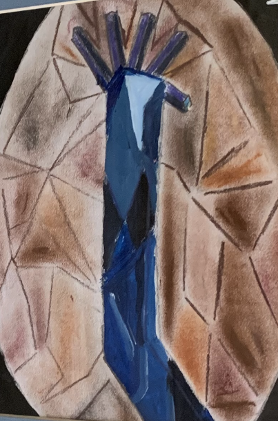
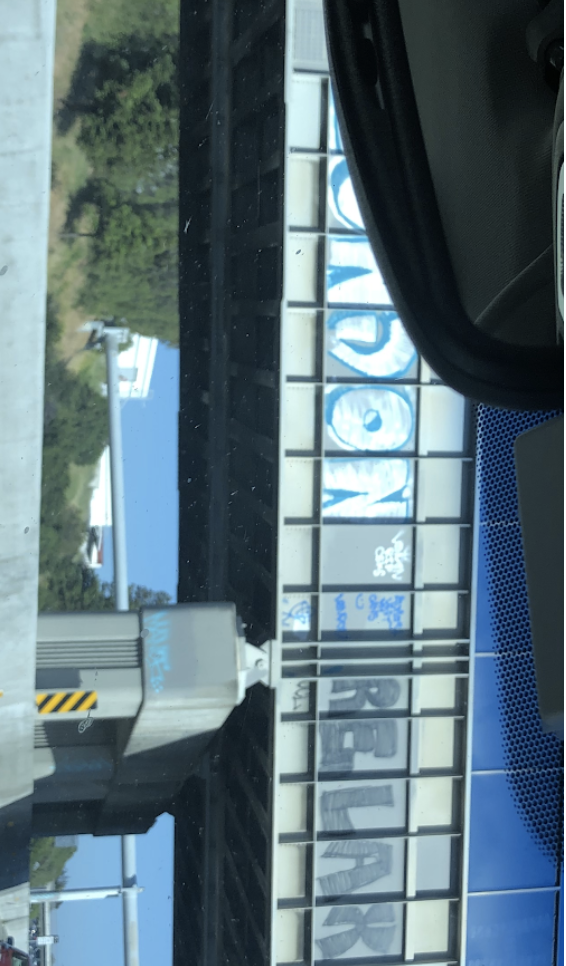
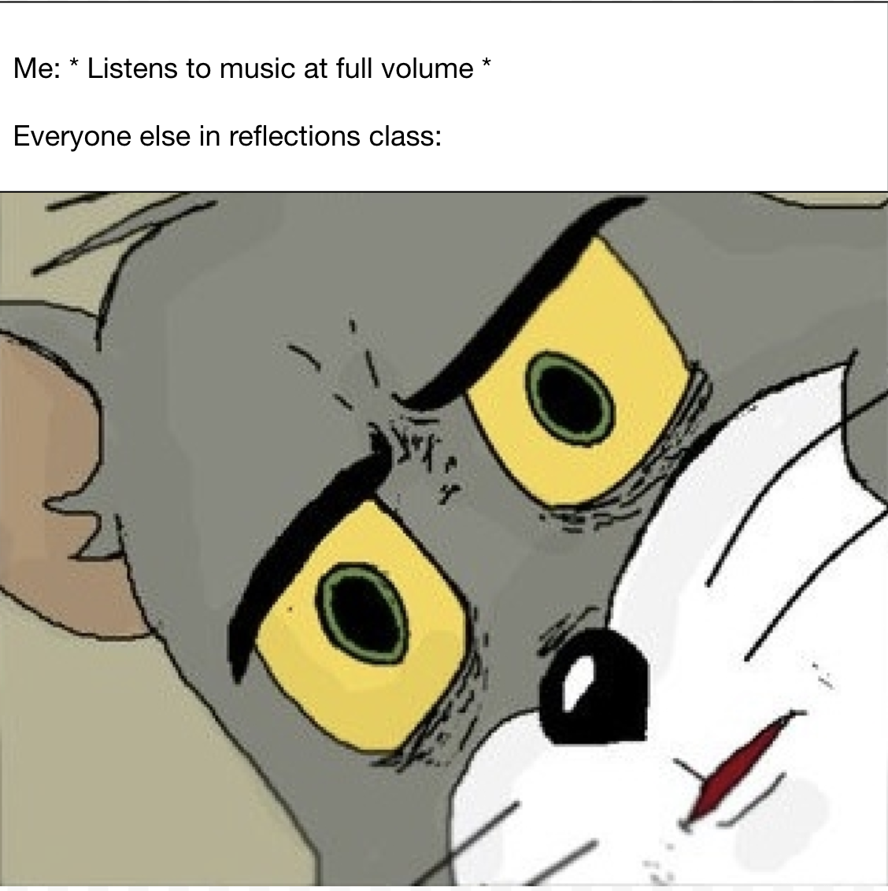
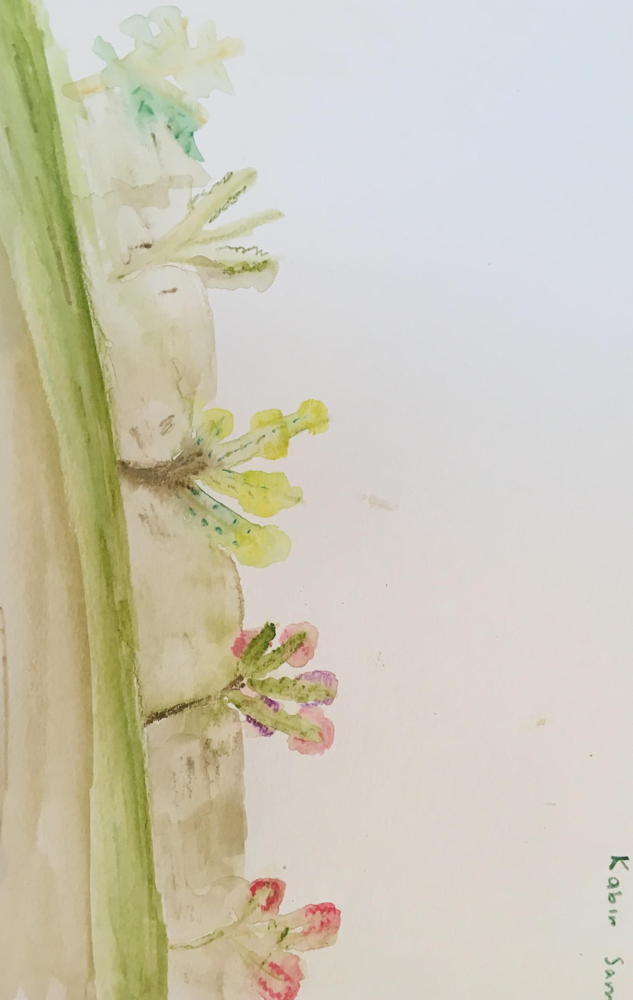

Cycle 5 Artwork
In Cycle 5, we began learning about contemporary art. We started off working on the era between Modern and Contemporary art, featuring periods such as Abstract Expressionism, Cubism and Fauvism. We also created our own paintings using a chosen form of Modern Art. We also used some of our paintings in the school's annual art show at Mission Coffee House. Later on, we began learning about Street Art, featuring the likes of Banksy and Jean-Michel Basquiat. As this was our last cycle, we were now approaching art of this time, so we were also looking at forms of art which are not often credited as actual art. Overall, this cycle really helped us understand what art is around us today.
Click the links to view each project
Cubism ArtworkGraffiti PhotographsMemes Filoli Gardens Watercolor Work
   